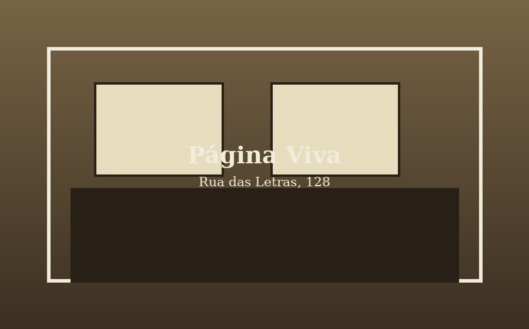
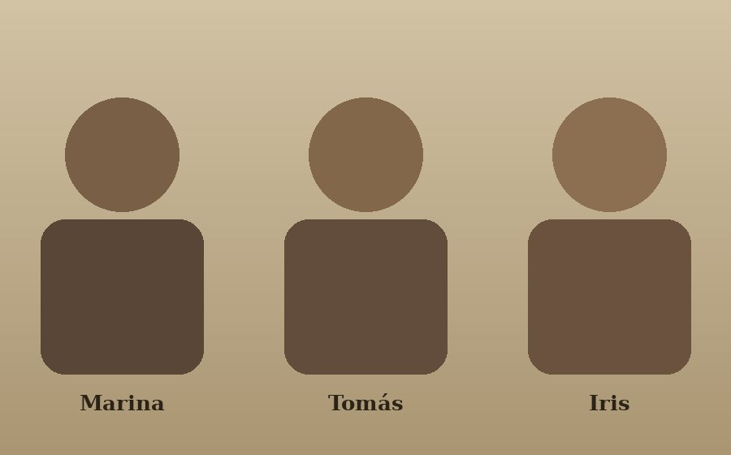

anos de livraria

Nossa história
A Página Viva nasceu em 2011, num sobrado pequeno na Rua das Letras, com pouco mais de duzentos títulos e uma mesa de segunda mão para os lançamentos. A ideia sempre foi simples: manter uma seleção enxuta, mas lida de verdade por quem trabalha na loja.
Hoje ocupamos os dois andares do sobrado — no térreo ficam os lançamentos e o café, no primeiro andar, a seção infantil e a sala onde acontecem os clubes de leitura. O acervo cresceu, mas o critério de curadoria continua o mesmo do primeiro dia.
Em números
títulos em catálogo
clubes de leitura já realizados
Quem trabalha aqui

Marina Tavares — fundadora e curadora
Bibliotecária de formação, é responsável pela seleção de ficção e pelos clubes de leitura mensais.
Tomás Vieira — seção infantil e eventos
Organiza as oficinas de sábado e cuida da curadoria de livros infantis e juvenis.
Iris Bandeira — atendimento e encomendas
Cuida das encomendas especiais e das parcerias com editoras independentes.